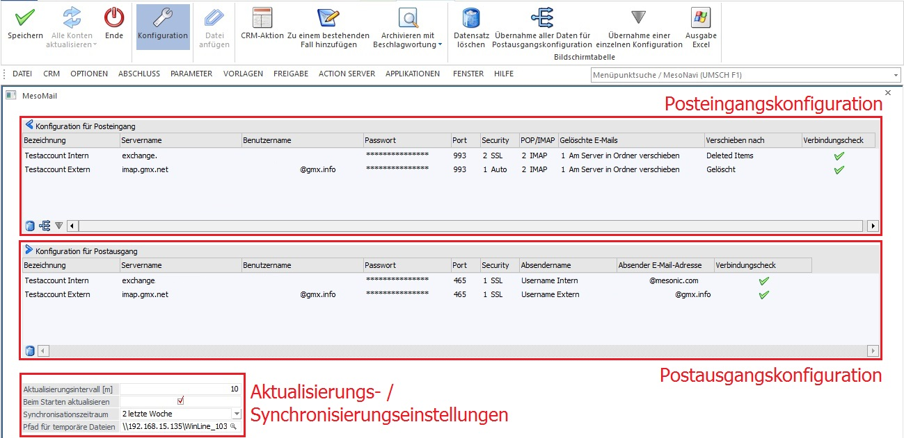
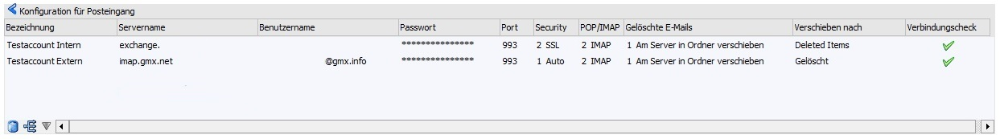
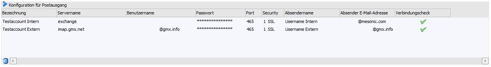
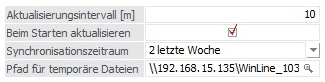

Zugriff auf bestehende Postfächer kann via POP3 sowie IMAP gewährleistet werden. Die entsprechende Konfiguration dieser Accounts erfolgt in dem Konfigurationsfenster, welches über den zugehörigen Button in der Ribbonleiste geöffnet wird. Neben der bereits beschriebenen Ribbonleiste gliedert sich das Fenster in die Bereiche
ü Posteingangskonfiguration
ü Postausgangskonfiguration
ü Aktualisierungs- / Synchronisierungseinstellungen
Die Posteingangskonfiguration

Ø Bezeichnung
Es kann eine individuelle Benennung des Postfachnamens erfolgen.
Ø Servername / Benutzername / Passwort / Port
Je nach Anbieter (bzw. Struktur der Unternehmung) müssen an diesem Punkt spezifische Eingaben getätigt werden.
Ø Security
ü 1 Auto
ü 2 SSL
ü 3 StartTLS
ü 4 StartTLSWhenAvailable
Ø POP/IMAP
ü POP
ü IMAP
Ø Gelöschte E-Mails (in Abhängigkeit zur Auswahl POP/IMAP)
Sofern ein Konto via IMAP eingebunden wird, stehen folgende Optionen zur Verfügung:
ü 1 Am Server in Ordner verschieben
ü 2 Am Server sofort entfernen
Ø Verschieben nach
Ist in der benachbarten linken Spalte "1 Am Server verschieben" gewählt, erfolgt nach Anwahl dieser Spalte eine automatische Abfrage aller im Postfach befindlichen Ordner. E-Mails, welche im Programm MesoMail gelöscht werden, werden auf dem eigentlichen E-Mail-Server im Zuge der Synchronisation in den hier angegebenen Ordner verschoben.
Ø Verbindungscheck
Durch Doppelklick wird eine Überprüfung der Eingaben durchgeführt.
Durch Klicken der Buttons "Übernahme aller Daten für Postausgangskonfiguration" oder "Übernahme einer einzelnen Konfiguration" werden, bis auf die Angaben für "Absender" sowie "Absendername", Eingangs- eingaben für den Postausgang übernommen. Je nach Wahl des Buttons werden entweder alle Angaben der (oder eben nur die ausgewählte) Posteingangskonfiguration für den Ausgang übernommen. Beide Button-Arten befinden sich ebenfalls verkleinert unter der Tabelle der Eingangskonfiguration. Informationen für "Port" und "Security" werden dabei automatisch auf "465" und SSL gesetzt. Hierbei bedarf es ggf. einer Anpassung der benötigten Angaben.
Die Postausgangskonfiguration

Analog zur Posteingangskonfiguration werden hier die Angaben für den Ausgang definiert. Dabei ist darauf zu achten, dass der gewünschte Absendername sowie die Absender E-Mail-Adresse manuell eingepflegt werden muss.
Aktualisierungs- /Synchronisationseinstellungen

Ø Aktualisierungsintervall
Das Intervall für eine automatisierte Aktualisierung wird in Minuten bestimmt.
Ø Beim Starten aktualisieren
Durch das Aktivieren der Checkbox erfolgt beim Programmstart eine automatisierte Aktualisierung der E-Mail-Konten.
Ø Synchronisationszeitraum
Durch die Auswahl der u. a. Werte erfolgt eine entsprechende (rückwirkende) Synchronisation des E-Mail-Eingangs aller eingetragenen E-Mail-Konten.
ü 1 unbegrenzt
ü 2 letzte Woche
ü 3 letzte 2 Woche
ü 4 letzter Monat
ü 5 letzte 3 Monate
Ø Pfad für temporäre Dateien
Im Standard ist in dieses Eingabefeld der Pfad des Installationsverzeichnisses des Servers zum Ordner …\Mail\Temp eingetragen. Diese Angabe wird ebenfalls an die Workstations übergeben. Es ist daher wichtig, die Adressierbarkeit des Servers über die Angabe eines DNS-Eintrags bzw. einer IP-Adresse zu gewährleisten.
Ø Datensatz löschen
Ausgewählte Zeilen innerhalb des Konfigurationsfensters lassen sich löschen. Dabei spielt es keine Rolle, ob Angaben im Posteingang oder Postausgang markiert wurden: Es werden jeweils die Einträge aus beiden Tabellen gelöscht. Dieser Button befindet sich in identischer Form auch jeweils unter den jeweiligen Tabellen.